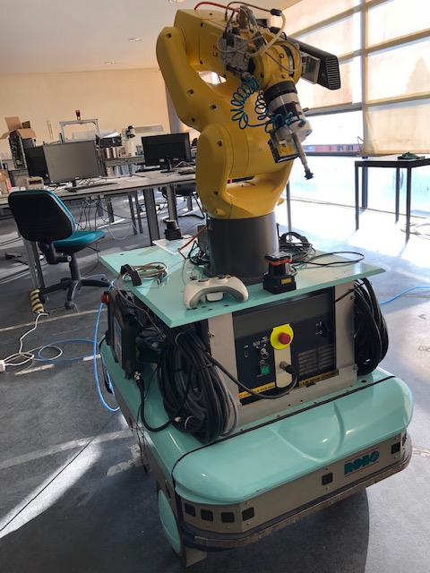
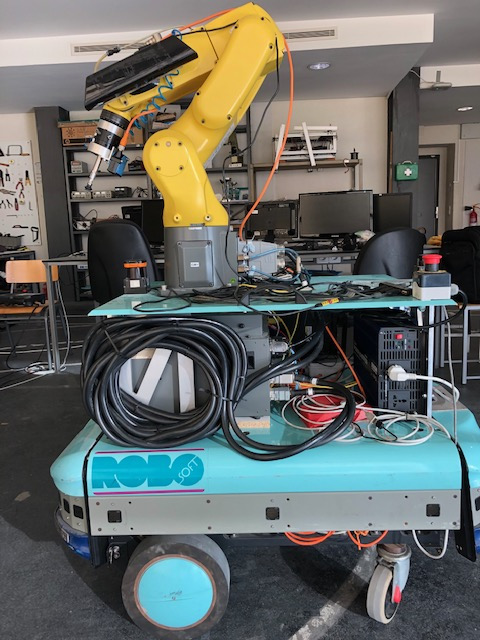

Neste semana foi dedicado mais tempo à escrita da dissertação. O estrutura da dissertação , bem como os cap 1 e 2 foram entregues para revisão, e os cap 3 e 4 estão quase terminados.
Esta semana foi efetuada a montagem/instalação do inversor de corrente de modo a dar autonomia ao nosso robô móvel. Para o efeito, foi necessário uma revisão e implementação de um novo layout de modo a conseguir otimizar espaço, e organizar todos os componentes. O estado final do equipamento pode ser visualizado nas seguintes imagens:


Após a sua montagem prosseguiu-se para alguns testes de funcionamento, nos quais houve insucesso. Detetou-se que durante a montagem houve danificação do circuito elétrico necessário à aquisição do laser 1D presente no gripper do manipulador.
Após a sua resolução, percebeu-se que o inversor de corrente teria influencia na alimentação de um laser 2D presente na plataforma, ou seja caso o inversor esteja ligado o laser não cumpre as suas funções. Não se percebe bem a causa da corrente uma vez que não existe variação de tensão, nem de corrente quando existe comuta de estado do inversor. Uma vez que estas medições foram realizadas com um multímetro as variações de amperagem podem não ser percetíveis. De modo a solucionar o problema, irá ser aplicado um conversor de corrente de modo a alimentar o laser pela saída do inversor.
Contudo, foram realizados alguns testes e algumas alterações no processo de “auto-picking”, sendo já possível o cancelamento de movimento na tarefa de bin-picking.
Apresenta-se de seguida um vídeo, sem ativação do ar comprimido, do processo até agora implementado.